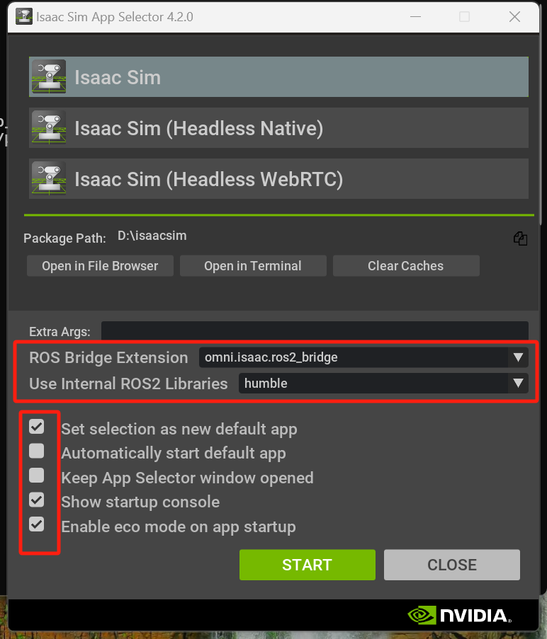

[Blog] Adapting Pegasus with IsaacSim Windows Tutorial
Section 1. Forehead:
PX4 (drones simulator) brief working principles (ref):
PX4 is a popular drones simulator that supports both Software In The Loop (SITL) simulation and Hardware In The Loop (HITL) simulation. In this passage, we only focus on SITL simulation and its adaptation on Windows platform.
A SITL build of PX4 uses SimulatorMavlink.cpp to handle these messages while a hardware build in HIL mode uses mavlink_receiver.cpp. The communication with PX4 are via the simulator MAVlink Api:
It’s worth to mention here, PX4 uses TCP port 4560 to connect with our customized simulator (i.e. Isaac Sim in this passage, instead of traditional ROS2) to send simulated physical data.
The QGroundControl (QGC) app is used as the controller of outside commanders and passing to PX4, displaying in the simulator ROS2 or IsaacSim. QGC can also be controlled by outside developer-side controller, i.e. Joystick/Gamepad. Settings can be found in https://docs.px4.io/main/en/config/joystick.html.
The ports for the GCS, offboard APIs (set-up by script px4-rc.sihsim, called by conditions in px4-rc.simulator) and simulator are specified by startup scripts in ROMFS/px4fmu_common/init.d-posix/rcS . ‘rcS’ is the main start-up script to be called by the outside simulator, and ‘px4-rc.simulator’ is called inside ‘rcS’ to setup basic simulator connections. The connections are built with MAVlink api from script px4-rc.mavlink (common upd connections to pass data, e.g. GCS) and px4-rc.mavlinksim (common tcp connections to pass data between the simulator). px4-rc.gzsim and px4-rc.jmavsim are 2 quick start api script to start a gazebo and JVM simulator.
Pegasus is a popular physical simulator extension on IsaacSim simulator PX4 drones simulator core. It builds a UI interface in IsaacSim for user defining variables, building up models and scripts. The defined variables in the UI interface is passed via connections built up by Pegasus to PX4 core, and the drone simulator in IsaacSim is controlled by the PX4 commands.
The relation of PX4, simulator (i.e. IsaacSim), Pegasus is shown in the following Figure:
Previously, Pegasus has been tested with Isaac Sim 4.2.0 on the Ubuntu 22.04LTS with NVIDIA driver 550.90.07, and the PX4-Autopilot used during development was v.14.3. Most robotics simulator developments are build on Linux, which impeded researcher using Windows system due to incompatibility. In this article, we have successfully modified and tested Pegasus extension working on IsaacSim windows system. Below is a list of tested hardware configuration info:
PX4 is originally working in Ubuntu system, we initially wish to find a directly windows support PX4 version. Page provided a Cygwin-basedtoolchain MSI installer. This method is tested failure to build on my tested PC, and this method is aborted officially after PX4 v1.10.
Now, wsl2-based development environment is the officially recommended way to run latest PX4 versions on windows system. How to install wsl2 Ubuntu system on windows can refer to other passages (there are many tutorials on installing wsl2 Ubuntu on windows). Therefore, we have to run latest px4 simulator in wsl2 on windows system, and build the bridge between local IsaacSim physical simulator with wsl2 PX4 host via modified ’Pegasus extension‘.
Section 3: Technical Steps
Pre-request and IsaacSim 4.2.0 Windows Installation:
An installed Ubuntu wsl2 system on Windows. In this article, we have installed Ubuntu 22.04 LTS in wsl2. IsaacSim 4.2.0 windows version (7.8GB) installed locally on windows with direct setup package in page. Use Isaac Sim Compatibility Checker V4.5.0 in page to check and ensure system compatibility.
**NOTICE:**
IsaacSim requires basic hardware requirement, see page for details.
- Older version Ubuntu before 18.04 (inc.) is not supported;
- At least 50 GB SSD;
- GPU version above GeForce RTX 3070;
- GPU driver lowest version: 537.58 (GameReady, Studio), 537.70 (RTX/Quadro, Grid/vGPU)
- Above are the specially listed minimal hardware requirement, don't install below these requirements.
IsaacSim 4.2.0 is an older version, and older version installation is not officially supported with Omniverse Launcher. Instead, install with above setup package is recommended.
The following IsaacSim 4.2.0 workstation installation can follow page (installation for 4.5 version) similarly. Start IsaacSim with Isaac Sim App Selector, where the fields ROS Bridge Extension and Use Internal ROS2 Library will be left for further completion.
Installing Pegasus extension:
Follow steps from page to install Pegasus extension. Notice the installation tutorial is for linux, modify when necessary. Below is a list of modifications:
Configuring system environment variables in windows (can be mannually done in GUI):
- Add ISAACSIM_PATH the 'IsaacSim 4.2.0' working folder directory to system variable;
- Find and add ISAACSIM_PYTHON, ISAACSIM the directories of 'python.bat' and 'isaac-sim.bat' under IsaacSim 4.2.0 folder;
Check:
The following 2 commands should be running in any cmd (change the 2nd path to corresponding ones add_cubes.py directory):
# Run the bundled python interpreter and see if it prints on the terminal "Hello World."
ISAACSIM_PYTHON -c "print('Hello World.')"
# Run the python interpreter and check if we can run a script that starts the simulator and adds cubes to the world
ISAACSIM_PYTHON ${ISAACSIM_PATH}/standalone_examples/api/omni.isaac.core/add_cubes.py
When installing Pegasus extension, Step 4, notice that the extension directory should be the pegasus extension path in your windows. After enabling the Pegasus simulator extension, in your IsaacSim third-party tab, you should expect no errors in IsaacSim commander.
Notice:
Although it is common to meet some warnings in the IsaacSim commander, you should always try to resolve errors.
Do not totally ignore warnings, as some warnings may indicate future errors and improper running.
Install latest/stable PX4 version and QGC on WSL2 ubuntu 22.04 LTS system following page.
Notice that in step installing ‘QGroundControl in WSL’, due to lack of GUI operation on Ubuntu system and wget tool, you can also download the QGroundControl.AppImage from the provided link in windows, and in windows explorer (side bar linux, or type in the wsl address) drag the downloaded app file from windows local to wsl under ‘~’ directory.
You can also install the QGC on windows locally and configure the communication between wsl and windows local following page.
By now, after installing both QGC on windows and PX4 on WSL, you should be able to run PX4 on wsl with QGC control on windows totally. To test, start and test the following SITL simulation commands:
# Start Gazebo with the x500 multicopter
make px4_sitl gz_x500
# Start Gazebo Classic with plane
make px4_sitl gazebo-classic_plane
# Start Gazebo Classic with iris and optical flow
make px4_sitl gazebo-classic_iris_opt_flow
# Start JMavSim with iris (default vehicle model)
make px4_sitl jmavsim
# Start PX4 with no simulator (i.e. to use your own "custom" simulator)
make px4_sitl none_iris
You should be able to control in either pxh command lines with commanders such as
Notice, you are expected to fail to build with command ‘make px4_sitl jmavsim’. This is because of missing dependencies in your Ubuntu system. Follow youtube video to install all necessary dependencies:
cd PX4-Autopilot/
sudo apt install ant
# note this package is different from the video
sudo apt-get install openjdk-11-jdk
# optional step to select the java version if you have multiple installed
sudo update-alternatives --config java
make distclean
make clean
make px4_sitl jmavsim
# if you still encounter errors (i.e. you can not run 'make px4_sitl gz_x500' after these installations), try delete and re-install the PX4 repo again
Modifications:
Now remains the link between IsaacSim Windows and PX4 on wsl with Pegasus. The main conflict of Pegasus is the its linux-styled path and commands applied in windows. Besides, this section also set-up the communication link between wsl and windows local.
Locate ‘px4_launch_tool.py’ File in windows directory ‘.\PegasusSimulator-main\extensions\pegasus.simulator\pegasus\simulator\logic\backends\tools\px4_launch_tool.py’ of Pegasus extension. Running this script is equivalent of the start simulating button in the IsaacSim UI interface.
Add ‘import platform, re’ in the imports area, pip install these modules if you don’t have;
In class PX4LaunchTool, function def launch_px4(self), Rewrite:
def launch_px4(self):
"""
Method that will launch a px4 instance with the specified configuration
"""
if platform.system() == "Windows":
# find the wsl address from the windows local side
wsl_addr = '172.26.64.1' # use ipconfig command in your CMD to get your own wsl ip address
wsl_cmd = (
f"export PX4_SIM_HOST_ADDR='{wsl_addr}' && "
f"export PX4_SIM_MODEL='{self.px4_model}' && "
f"cd {self.px4_dir} && "
f"./build/px4_sitl_default/bin/px4 "
f"ROMFS/px4fmu_common/ -s {self.rc_script} "
f"-i {self.vehicle_id} -d"
)
self.px4_process = subprocess.Popen(
["wsl", "bash", "-lc", wsl_cmd],
shell=False,
env=self.environment,
)
else:
self.px4_process = subprocess.Popen(
[
self.px4_dir + "/build/px4_sitl_default/bin/px4",
self.px4_dir + "/ROMFS/px4fmu_common/",
"-s",
self.rc_script,
"-i",
str(self.vehicle_id),
"-d",
],
cwd=self.root_fs.name,
shell=False,
env=self.environment,
)
Locate ‘configs.yaml’ file under dir ‘.\PegasusSimulator main\extensions\pegasus.simulator\config\configs.yaml’.
Always keep the px4_dir your default/installed ubuntu path (not your wsl path from windows), e.g. in my project it is ‘~/PX4-Autopilot’;
You can change the latitude and longitude here to your preferred location;
Locate ‘pegasus_interface.py’ file under dir ‘.\PegasusSimulator-main\extensions\pegasus.simulator\pegasus\simulator\logic\interface\pegasus_interface.py’.
add ‘import platform’ in the imports
Replace function def _get_px4_path_from_config(self) under class PegasusInterface
def _get_px4_path_from_config(self):
"""
Method that reads the configured PX4 installation directory from the extension configuration file
Returns:
str: A string with the path to the px4 configuration directory or empty string ''
"""
px4_dir = ""
# Open the configuration file. If it fails, just return the empty path
try:
with open(CONFIG_FILE, 'r') as f:
data = yaml.safe_load(f)
if platform.system() == "Windows":
px4_dir = data.get("px4_dir", '~/PX4-Autopilot')
else:
px4_dir = os.path.expanduser(data.get("px4_dir", None))
except:
carb.log_warn("Could not retrieve px4_dir from: " + str(CONFIG_FILE))
return px4_dir
Replace function set_px4_path(self, path: str) under class PegasusInterface
def set_px4_path(self, path: str):
"""Method that allows a user to save a new px4 directory in the configuration files of the extension.
Args:
absolute_path (str): The new path of the px4-autopilot installation directory
"""
if platform.system() == "Windows":
self._px4_path = path
else:
# Save the new path for current use during this simulation
self._px4_path = os.path.expanduser(path)
# Save the new path in the configurations file for the next simulations
try:
# Open the configuration file and the all the configurations that it contains
with open(CONFIG_FILE, 'r') as f:
data = yaml.safe_load(f)
# Open the configuration file. If it fails, just warn in the console
with open(CONFIG_FILE, 'w') as f:
data["px4_dir"] = path
yaml.dump(data, f)
except:
carb.log_warn("Could not save px4_dir to: " + str(CONFIG_FILE))
carb.log_warn("New px4_dir set to: " + str(self._px4_path))
Locate ‘ui_delegate.py’ file under dir ‘.\PegasusSimulator-main\extensions\pegasus.simulator\pegasus\simulator\ui\ui_delegate.py’.
add ‘import platform’ in the imports
Replace var definition ‘px4_path = os.path.expanduser(self._px4_directory_field.get_value_as_string())’ in function async def async_load_vehicle()(~line 236) of class UIDelegate with
# Read the PX4 path from the field
if platform.system() == "Windows":
px4_path = self._px4_directory_field.get_value_as_string()
else:
px4_path = os.path.expanduser(self._px4_directory_field.get_value_as_string())
Locate ‘px4_mavlink_backend.py’ file under dir ‘.\PegasusSimulator-main\extensions\pegasus.simulator\pegasus\simulator\logic\backends\px4_mavlink_backend.py’.
add ‘import platform, re, subprocess’ in the imports
Under class PX4MavlinkBackendConfig(BackendConfig), function def __init__(self, config={}), after define self.config = config, add
if platform.system() == 'Windows':
# find the wsl address from the windows local side
wsl_addr = '172.26.64.1' # use ipconfig command in your CMD to get your own wsl ip address
self.config['connection_ip'] = wsl_addr
All modifications ends here, you should be able to run with out errors in IsaacSim.
Under wsl Ubuntu dir ‘.\PX4-Autopilot\ROMFS\px4fmu_common\init.d-posix’
rcS - quick start file, called by Pegasus in ‘px4_launch_tool.py’; call ‘px4-rc.simulator’
‘px4-rc.simulator’ should call ‘. px4-rc.mavlinksim’ to connect with customized physical simulator, i.e. IsaacSim
In ‘. px4-rc.mavlinksim’, ‘PX4_SIM_HOST_ADDR’ has already been set as the system variable in wsl in Pegasus ‘px4_launch_tool.py’, while ‘PX4_SIM_HOSTNAME’ is None;
Section 4 Start IsaacSim:
Open your QGC on windows;
In windows system, go to IsaacSim installation dir, run command line CMD or PowerShell there. Better to use there selector to start:
RUN: .\isaac-sim.selector.bat
You should see the start of IsaacSim App selector 4.2.0:
[Notice] the above highlight parts, should be configured correctly as the above steps, and will show the info;
Loading scene and vehicle, you should be able to see everything working:
First run command in pxh> commander takeoff / or press takeoff button on QGC
b. set your path or route via commands or QGC control:
Section 5: Quick Troubleshooting:
Warning: waiting for the first heartbeat;
The communication between pegasus and px4 wsl is not correctly configured.
Error: xxx is not a valid Win32 api;
linux command not supported in windows, need to do the same thing with replaced windows commands;
Some useful test and debug tricks:
Check Mavlink connections when PX4 is running in wsl. In QGC, ‘Analyze Tools’ → MAVLink Console: >pxh: mavlink status (return all open connections from px4 end)
In wsl side, return your local windows ip: cat /etc/resolv.conf | grep nameserver
Listen on one port all communication info:
sudo apt install tcpdump # with tcpdump
sudo tcpdump -i any tcp port 4560 (the tcp port we use)
you are expecting returns like: lo In IP localhost.18570 > localhost.14550: UDP, length 44 [Notice the lo mark in front, it shows the connection status, lo: loopback]
[or]eth0 Out IP 172.26.74.211.18570 > LAPTOP-MSVAT609.mshome.net.18570: UDP, length 40 [have established a link loop connecting outside]
[or] sudo tcpdump -i any udp port 14560 (the udp port use to connect with QGC)


{kind=link}
{kind=link}

{kind=link}